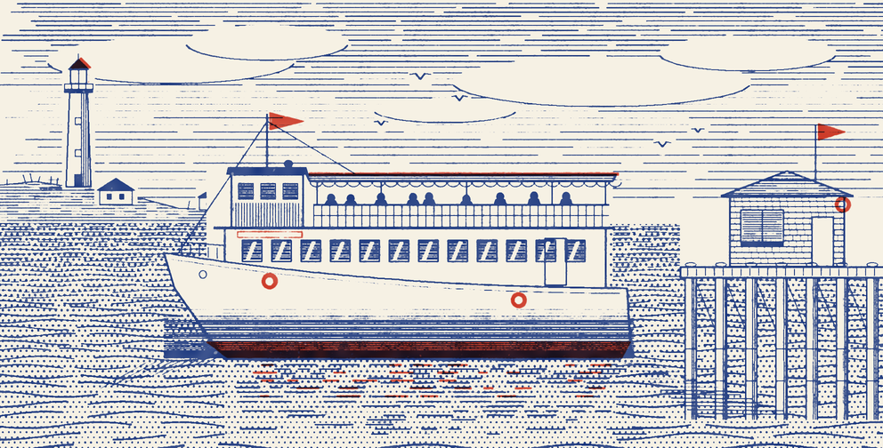
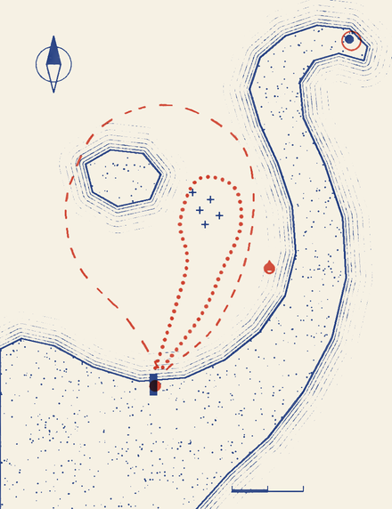

CAPE COD, MASSACHUSETTS
SEASON OF 1984
Cape Bay
EXCURSION LINE
SAILING
SINCE
1964

The Cape Bay Queen leaving the Town Pier.
U.S.C.G. INSPECTED, 149 PASSENGERS
DAILY SAILINGS
June 16 to Labor Day
Harbor and seal cruise
1 HOUR
Out round Seal Ledge and the bell buoy. Seals most days, mermaids never promised.
10:00
12:00
2:00
4:00
Sunset supper cruise
2 HOURS
Round Gull Island at dusk. Supper from the galley, see over.
6:30 P.M.
FARES
Supper is extra
Adults
5.00
Children 3 to 11
2.50
Under 3, on a lap
free
Six-day pass, any sailing
18.00
HARBOR CHART

N
1 MILE
Gull Island
SEAL LEDGE
BELL BUOY
POINT LIGHT
Cape Bay
TOWN PIER
THE TOWN
HARBOR AND SEAL CRUISE
SUNSET SUPPER CRUISE
ON BOARD, PLEASE
Children stay behind the rail.
No jumping from the upper deck.
No jumping from the upper deck.
Please don’t drop coins on deck.
Non-swimmers, tell a deckhand.
Non-swimmers, tell a deckhand.
Tickets at the booth. Island runs by small boat, ask for Jack.
GALLEY MENU OVER